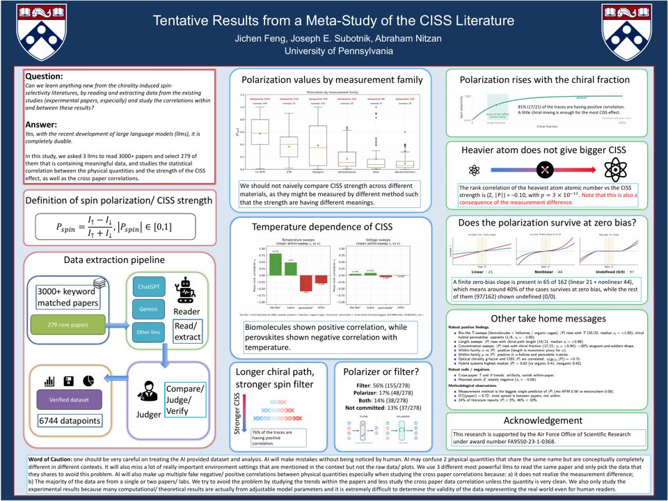
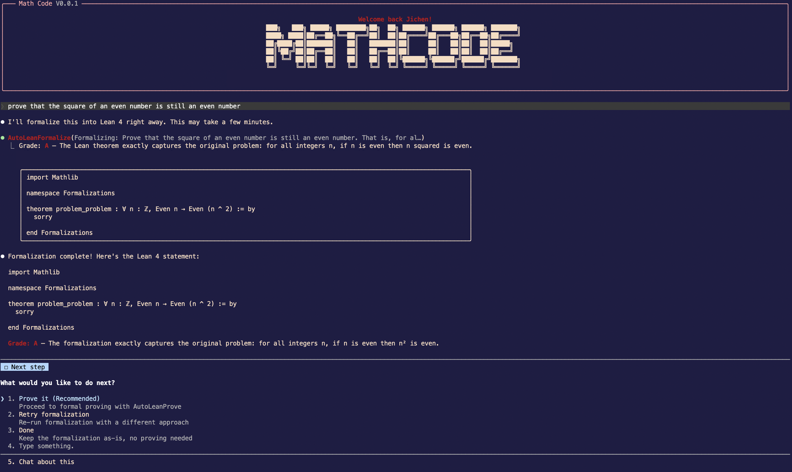
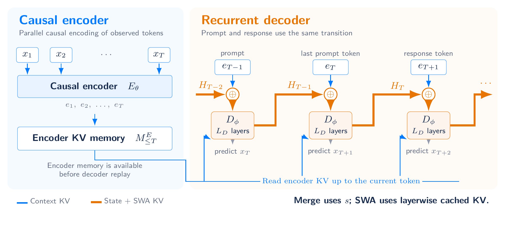
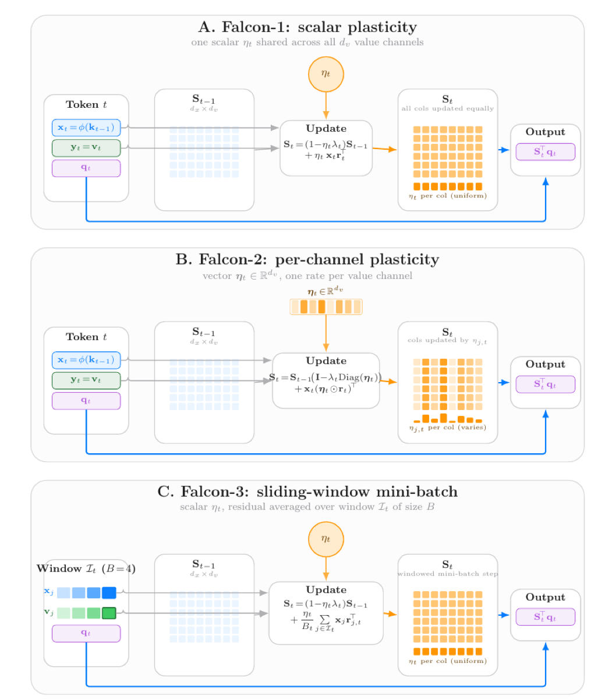
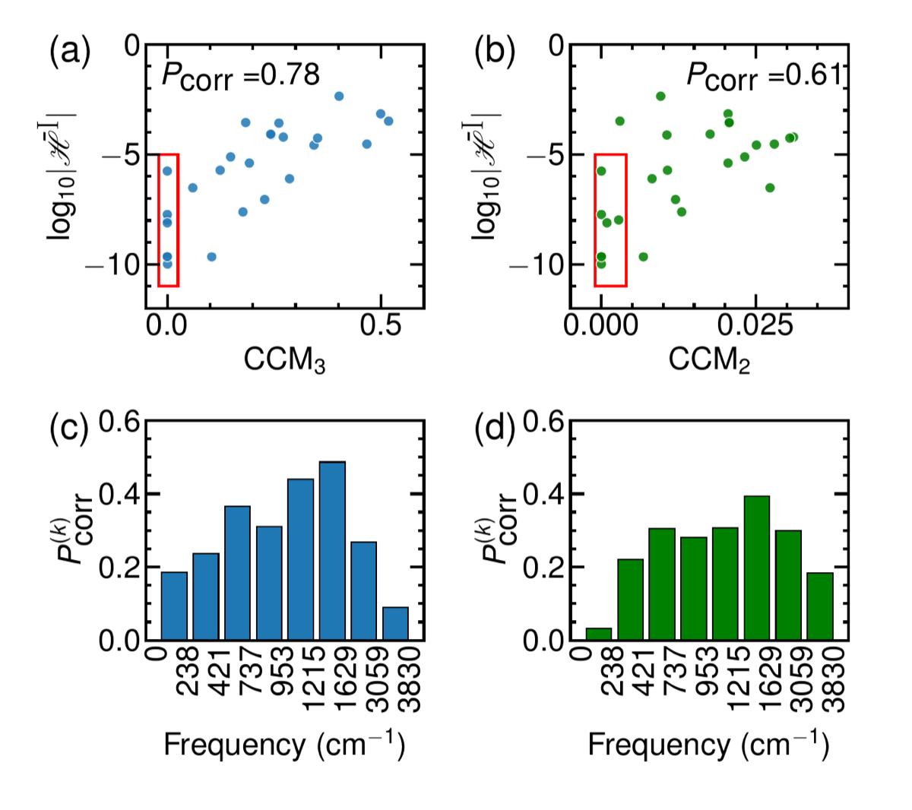
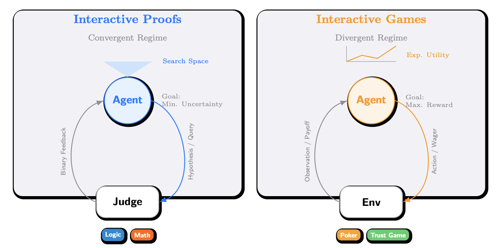
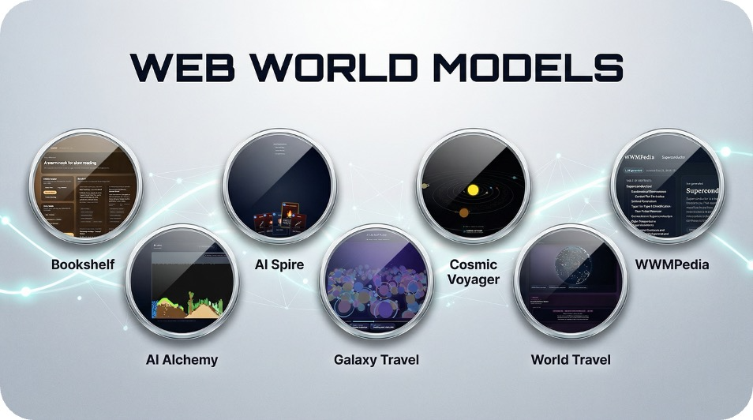
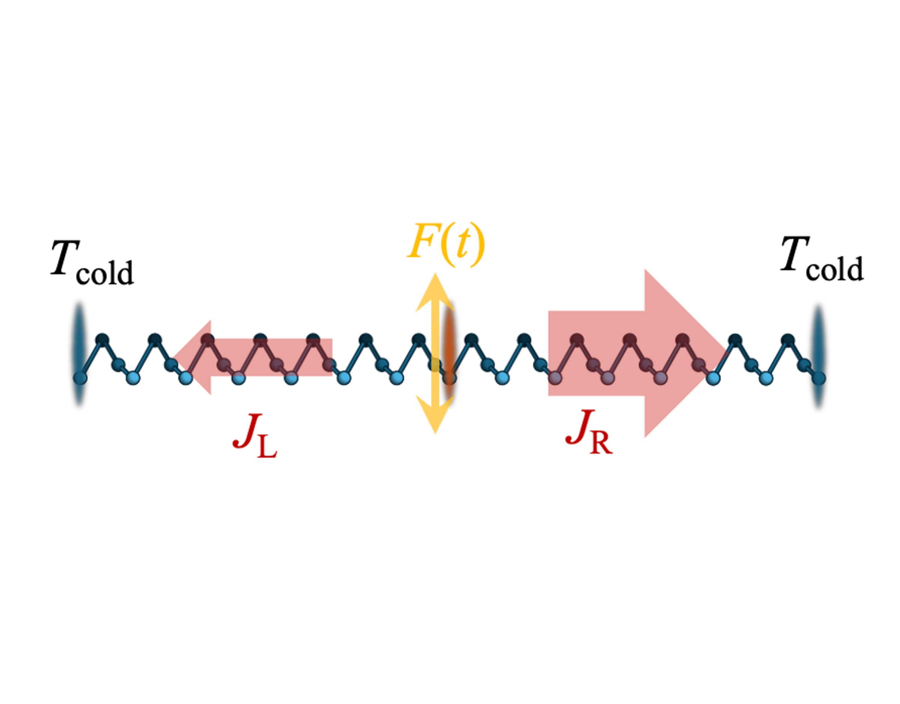
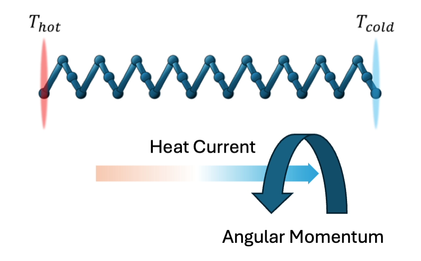
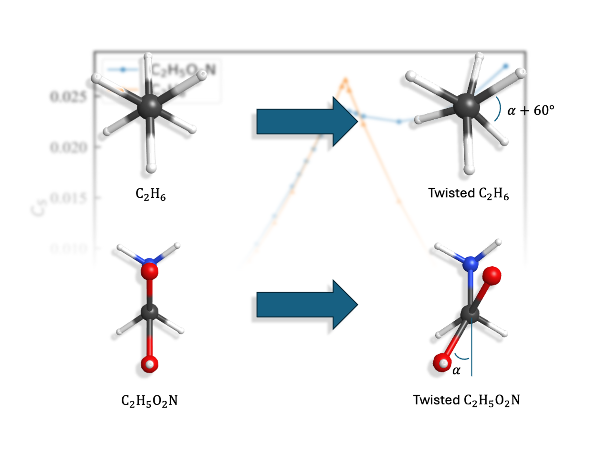

I am a Ph.D. student in the Department of Chemistry at the University of Pennsylvania, advised by Prof. Joseph E. Subotnik and Prof. Abraham Nitzan. Following Prof. Subotnik’s move to Princeton University, I remain enrolled at the University of Pennsylvania and am also a non-degree trailing student at Princeton, where I have served as a Research Assistant in his group.
My research is broadly in theoretical chemical physics and non-equilibrium dynamics in chiral molecular systems (e.g., chiral vibrational modes, vibrational energy transport, and angular-momentum generation under driving). I’m also interested in AI-for-science and building computational systems that help scientists reason and explore.
I am the creator and lead developer of MathCode, an open-source mathematical coding agent with built-in Lean capabilities for interactive mathematical reasoning and formal proof verification.
University of Pennsylvania — Ph.D. in Chemistry (Aug 2021–present).
University of Science and Technology of China (USTC) — B.S. in Physics (Sept 2017–Jun 2021).
Programming: C / MATLAB / Python / Julia
Scientific computing: LAMMPS; DFT; Quantum–Classical Dynamics
Interests: Nonadiabatic Dynamics; AI for science; Quantum information; Computational condensed matter physics

Creator & Lead Developer
MathCode is an open-source terminal AI coding assistant for mathematical reasoning and formal verification. It can inspect Lean goals, search declarations, check candidate proofs, and verify completed proofs interactively.
- Oct 2026: "Recurrent Looped Transformer" released on arXiv (2610.07591).
- Aug 2026: "Fast Weight Attention for Continual Learning" released on arXiv (2608.27763).
- Jul 2026: "Chiral Vibrational Modes and Vibrational Circular Dichroism" released on arXiv (2607.22257).
- Mar 2026: "Interactive Benchmarks" released on arXiv (2603.04737).
- Mar 2026: Journal article on "Vibrational angular momentum generation in thermally driven chiral systems" (Phys. Rev. B 113(9)).
- Dec 2025: "Web World Models" released on arXiv (2512.23676).
- Dec 2025: Journal article on "Rectification of Vibrational Energy Transfer in Driven Chiral Molecules" (J. Chem. Phys. 163(23)).
- Jul 2025: Journal article on "Chiral Vibrational Modes in Small Molecules" (J. Chem. Phys. 163(1)).
Click “abstract” / “bibtex” to expand. Click the paper title (or thumbnail) to open a short project-style page with images.
|
 |
Yifan Zhang, Jichen Feng, Shihan Qin arXiv preprint arXiv:2610.07591 (2026)
Abstract (summary): RLT pairs a causal encoder with a decoder that reuses its preceding token’s state. This feedback builds a longer computation path across tokens without adding layers per token. Experiments on six algorithmic tasks investigate how encoder/decoder depth and feedback frequency affect length generalization. Selected configurations extrapolate parity and permutation tracking far beyond training lengths, while ablations show that these gains depend on recurrent feedback. Chunked updates expose a task-dependent trade-off between parallel processing and state-tracking accuracy.
@misc{zhang2026recurrentlooped,
title = {Recurrent Looped Transformer},
author = {Zhang, Yifan and Feng, Jichen and Qin, Shihan},
year = {2026},
eprint = {2610.07591},
archivePrefix= {arXiv},
primaryClass = {cs.CL},
url = {https://arxiv.org/abs/2610.07591}
}
|
|
 |
Yifan Zhang, Steve Ta, Jasper Zhang, Jichen Feng, Shuzhen Li, Yongxin Zhang, Yifeng Liu, Huizhuo Yuan, Mengdi Wang, Quanquan Gu, Andrew Chi-Chih Yao arXiv preprint arXiv:2608.27763 (2026)
Abstract: Recurrent fast-weight memories and selective state-space models compress an expanding context into a fixed-size recurrent state, making the state transition an online learning rule. We study this rule under read-after-write autoregressive semantics. For the prefix-prediction objective considered here, the local fast-memory example revealed at step t is the prefix-aligned pair (xt, yt) = (φ(kt-1), vt). The common same-step association (φ(kt), vt) remains causal, but optimizes a different internal objective. We derive normalized first-order updates for squared-error regression and negative inner-product objectives. The regression family comprises Falcon-1 (a scalar NLMS update), Falcon-2 (its per-column extension), and Falcon-3 (a sliding-window mini-batch update); Falcon-1A/Falcon-2A/Falcon-3A are the corresponding inner-product variants. We provide recurrent, masked-parallel, and chunk-parallel forms, together with numerically stable positive-decay renormalization. Representative variants remain competitive in language modeling and improve length extrapolation on variable-digit addition. This framework separates temporal alignment, plasticity, forgetting, and bounded rehearsal in recurrent sequence models.
@misc{zhang2026fastweightattention,
title = {Fast Weight Attention for Continual Learning},
author = {Zhang, Yifan and Ta, Steve and Zhang, Jasper and Feng, Jichen and Li, Shuzhen and Zhang, Yongxin and Liu, Yifeng and Yuan, Huizhuo and Wang, Mengdi and Gu, Quanquan and Yao, Andrew Chi-Chih},
year = {2026},
eprint = {2608.27763},
archivePrefix= {arXiv},
primaryClass = {cs.LG},
url = {https://arxiv.org/abs/2608.27763}
}
|
|
 |
Xuecheng Tao, Clàudia Climent, Ethan Abraham, Jichen Feng, Abraham Nitzan arXiv preprint arXiv:2607.22257 (2026)
Abstract: The recent interest in chiral phonons in a variety of physical phenomena and their hypothesized role in the chiral-induced spin selectivity effect calls for further investigation into the chirality of molecular vibrations. Although molecular chirality has conventionally been quantified using structural properties, recent work has highlighted the role of dynamical response properties as chirality metrics. In this work, we examine an inter-atom helicity pseudoscalar as a complementary measure of vibrational chirality, associated with the vibrational circular dichroism (VCD) intensity in the fixed partial charge (FPC) approximation. This pseudoscalar is translationally and rotationally invariant, can distinguish between opposite enantiomers, and unlike an atomic pseudoscalar measure considered in our earlier work does not rely on a predefined symmetry axis. For a twisted ethane model as well as several small molecules, this pseudoscalar correlates well with structural descriptors based on the continuous chirality measure. Overall, our results support response-based metrics as a physically meaningful and practically useful characterization of vibrational chirality. Importantly, while the FPC-based VCD estimate provides a useful quantifier of vibrational chirality, we show that it is a rather poor predictor of the actual molecular VCD response because the latter is strongly influenced by the vibrational configuration-dependent molecular electronic response.
@misc{tao2026chiralvibrationalmodes,
title = {Chiral Vibrational Modes and Vibrational Circular Dichroism},
author = {Tao, Xuecheng and Climent, Clàudia and Abraham, Ethan and Feng, Jichen and Nitzan, Abraham},
year = {2026},
eprint = {2607.22257},
archivePrefix= {arXiv},
primaryClass = {physics.chem-ph},
url = {https://arxiv.org/abs/2607.22257}
}
|
|
 Interactive Benchmarks
|
Baoqing Yue, Zihan Zhu, Yifan Zhang, Jichen Feng, Hufei Yang, Mengdi Wang arXiv preprint arXiv:2603.04737 (2026)
Abstract: Standard benchmarks have become increasingly unreliable due to saturation, subjectivity, and poor generalization. We argue that evaluating model's ability to acquire information actively is important to assess model's intelligence. We propose Interactive Benchmarks, a unified evaluation paradigm that assesses model's reasoning ability in an interactive process under budget constraints. We instantiate this framework across two settings: Interactive Proofs, where models interact with a judge to deduce objective truths or answers in logic and mathematics; and Interactive Games, where models reason strategically to maximize long-horizon utilities. Our results show that interactive benchmarks provide a robust and faithful assessment of model intelligence, revealing that there is still substantial room to improve in interactive scenarios.
@misc{yue2026interactivebenchmarks,
title = {Interactive Benchmarks},
author = {Yue, Baoqing and Zhu, Zihan and Zhang, Yifan and Feng, Jichen and Yang, Hufei and Wang, Mengdi},
year = {2026},
eprint = {2603.04737},
archivePrefix= {arXiv},
primaryClass = {cs.AI},
url = {https://arxiv.org/abs/2603.04737}
}
|
|
 |
Jichen Feng, Yifan Zhang, Chenggong Zhang, Yifu Lu, Shilong Liu, Mengdi Wang arXiv preprint arXiv:2512.23676 (2025)
Abstract: Language agents increasingly require persistent worlds in which they can act, remember, and learn. Existing approaches sit at two extremes: conventional web frameworks provide reliable but fixed contexts backed by databases, while fully generative world models aim for unlimited environments, but the world is constructed primarily through generation, making it harder to maintain a fixed, deterministic global framework, reducing controllability. In this work, we introduce the Web World Model (WWM), a middle ground where world state and “physics” are implemented in ordinary web code to ensure logical consistency, while large language models generate context, narratives, and high-level decisions on top of this structured latent state. We build a suite of WWMs on a realistic web stack, including an infinite travel atlas grounded in real geography, fictional galaxy explorers, web-scale encyclopedic and narrative worlds, and simulation- and game-like environments. Across these systems, we identify practical design principles for WWMs: separating code-defined rules from model-driven imagination, representing latent state as typed web interfaces, and utilizing deterministic generation to achieve unlimited but structured exploration. Our results suggest that web stacks themselves can serve as a scalable substrate for world models, enabling controllable yet open-ended environments.
@misc{feng2025webworldmodels,
title = {Web World Models},
author = {Feng, Jichen and Zhang, Yifan and Zhang, Chenggong and Lu, Yifu and Liu, Shilong and Wang, Mengdi},
year = {2025},
eprint = {2512.23676},
archivePrefix= {arXiv},
primaryClass = {cs.AI},
url = {https://arxiv.org/abs/2512.23676}
}
|
|
 |
Jichen Feng, Ethan Abraham, Joseph E. Subotnik, Abraham Nitzan The Journal of Chemical Physics 163(23): 234110 (2025)
Abstract: We show that the combination of molecular chirality and phase-controlled driving can lead to rectification of vibrational energy transfer. We demonstrate this effect using classical models of (1) a single helical chain and (2) a more realistic model of polyethylene double helix. We examine the effect of the driving frequency, polarization, and temperature on this phenomenon. Notably, we find that the direction and magnitude of the observed directionality preference depend on the driving frequency and phase, and that the effect persists at room temperature.
@article{feng2025rectification,
title = {Rectification of Vibrational Energy Transfer in Driven Chiral Molecules},
author = {Feng, Jichen and Abraham, Ethan and Subotnik, Joseph E. and Nitzan, Abraham},
journal = {The Journal of Chemical Physics},
year = {2025},
volume = {163},
number = {23},
pages = {234110},
doi = {10.1063/5.0299947},
url = {https://doi.org/10.1063/5.0299947}
}
|
|
 |
Jichen Feng, Ethan Abraham, Joseph E. Subotnik, Abraham Nitzan Physical Review B 113(9): 094301 (2026)
Abstract: The appearance of angular momentum in the nuclear motion of molecular systems lacking inversion symmetry under imposed thermal gradients presents a novel mechanism with potential implications for spintronics, magnetic response, and energy transport in such systems. Here we explore this phenomenon, using theoretical analysis and numerical simulations to study angular momentum generation in several driven chiral molecular models. We demonstrate that significant vibrational angular momentum can be induced under both mechanical and thermal driving, with magnitude comparable to that induced in optically driven chiral phonons. We find that generation of angular momentum is a common and general phenomenon in driven chiral structures, highlighting the role of symmetry-breaking in the (non-equilibrium) internal atomic motion of such systems.
@article{feng2026vibrationalangularmomentum,
title = {Vibrational angular momentum generation in thermally driven chiral systems},
author = {Feng, Jichen and Abraham, Ethan and Subotnik, Joseph E. and Nitzan, Abraham},
journal = {Physical Review B},
year = {2026},
volume = {113},
number = {9},
pages = {094301},
doi = {10.1103/zbzn-t9bv},
url = {https://doi.org/10.1103/zbzn-t9bv}
}
|
|
 |
Jichen Feng, Ethan Abraham, Joseph Subotnik, Abraham Nitzan The Journal of Chemical Physics 163(1): 014106 (2025)
Abstract: The development of quantitative methods for characterizing molecular chirality can provide an important tool for studying chirality-induced phenomena in molecular systems. Significant progress has been made in recent years toward understanding the chirality of molecular normal vibrational modes, mostly focusing on vibrations of helical molecular structures. In the present study, we examine the applicability of two methodologies previously used for helical structures for the quantification of the chirality of molecular normal modes across a range of small, not necessarily helical, molecules. The first approach involves the application of the Continuous Chirality Measure (CCM) to each normal mode by associating the mode with a structure formed by imposing the corresponding motion relative to a common origin. The second approach assigns to each normal mode a pseudoscalar defined as the product of atomic linear and angular momentum summed over all atoms. In particular, using the CCM also as a measure of the chirality of the underlying molecular structure, we establish the existence of a correlation between the chirality of molecular normal modes and that of the underlying molecular structure. Furthermore, we find that normal modes associated with different frequency ranges of the molecular vibrational spectrum exhibit distinct handedness behavior.
@article{feng2025chiralvibrationalmodes,
title = {Chiral Vibrational Modes in Small Molecules},
author = {Feng, Jichen and Abraham, Ethan and Subotnik, Joseph and Nitzan, Abraham},
journal = {The Journal of Chemical Physics},
year = {2025},
volume = {163},
number = {1},
pages = {014106},
doi = {10.1063/5.0271584},
url = {https://doi.org/10.1063/5.0271584}
}
|
Selected posters and talks.
Selected presentations
Symposium on Chiral Induced Spin Selectivity (CISS)
Poster
Molecular Interactions and Dynamics Gordon Research Conference
Poster
Chirality Induced Spin Selectivity Online Seminars
Talk
APS Global Physics Summit
Talk
Gordon Research Conference: Electron Spin Interactions with Chiral Molecules and Materials
Poster
Princeton Center for Theoretical Science: Nonadiabatic Dynamics, Electron-Phonon Interactions, and Spin-Phonon Couplings
Poster
Penn Conference on Theoretical Chemistry (PCTC)
Poster